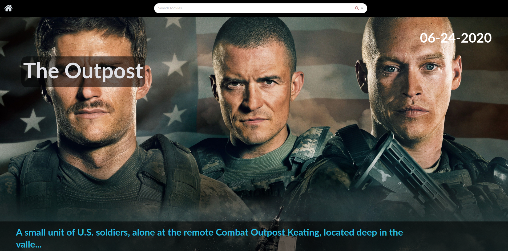

My Portfolio
Movie & TV Show Info App
Visit Site | Github Responsive Web Application that lets users search for and browse movies and tv shows. Was written using HTML, CSS, and Javascript, and ReactJS. This application integrates with The Movie Database API to fetch and show metadata to users.
Music Player App
Visit Site | Github
This Web App utilizes Jamendo’s API to let users search for, stream, and download free music.
Weight Loss Blog
Visit Site
Basic blog in the health niche. Some goals of this project were to create a landing page to attract leads, create blog posts that would boost the SEO and maximize traffic, and to make the entire site responsive and look good across all devices (mobile phones, tablets, and personal computers). The backend of this website uses Wordpress to manage the content on the site.
Etch A Sketch Browser Game
Visit Site | Github
Etch A Sketch browser game built written in HTML, CSS, and vanilla Javascript. The goal of this project was to create a game that mimicked an etch a sketch device. Not compatible with mobile devices.